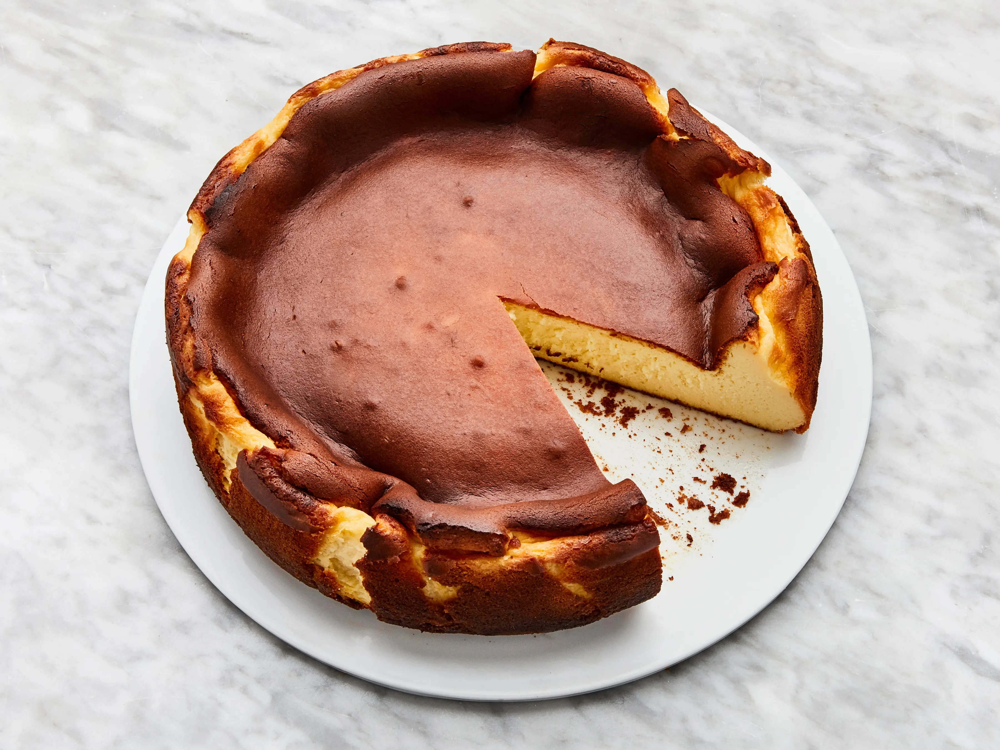

Home
Basque Cheesecake Recipe

The basque cheesecake is the yummy of the sweet-yummies!
The basque cheesecake, or La Viña, is a spanish-style recipe. A double boiler technique is often used, though not mandatory.
You can bake it alone, but we recommend doing it with your kids. You (they) will enjoy it (a lot!), and develop new neuron connections (so do you, I hope hehe). 😁
Ingredients
- Goat cheese, 200gr
- Cream cheese, 600gr
- Eggs, 6
- Sugar, 200g
- Honey, 1tbs
- Flour, 1tbs
- Heavy cream, 140ml
Step-by-step
- Preheat the oven to 200°C (392°F).
- In a large bowl, mix the goat cheese and cream cheese until smooth.
- Add the eggs one by one, mixing well after each addition.
- Stir in the sugar, honey, and flour until fully combined.
- Pour in the heavy cream and mix until the batter is smooth.
- Pour the mixture into a greased 9-inch springform pan.
- Bake for about 40-50 minutes or until the top is dark brown and the center is slightly jiggly.
- Let it cool at room temperature before refrigerating for at least 4 hours.
- Serve chilled or at room temperature. Enjoy your delicious Basque Cheesecake!